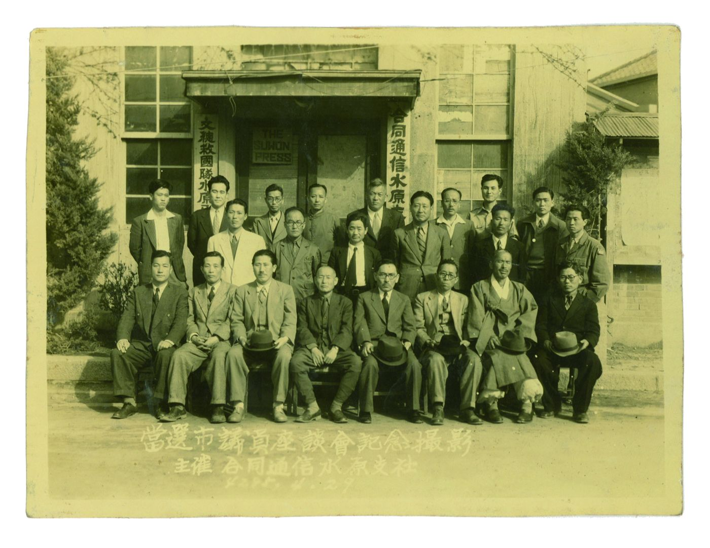
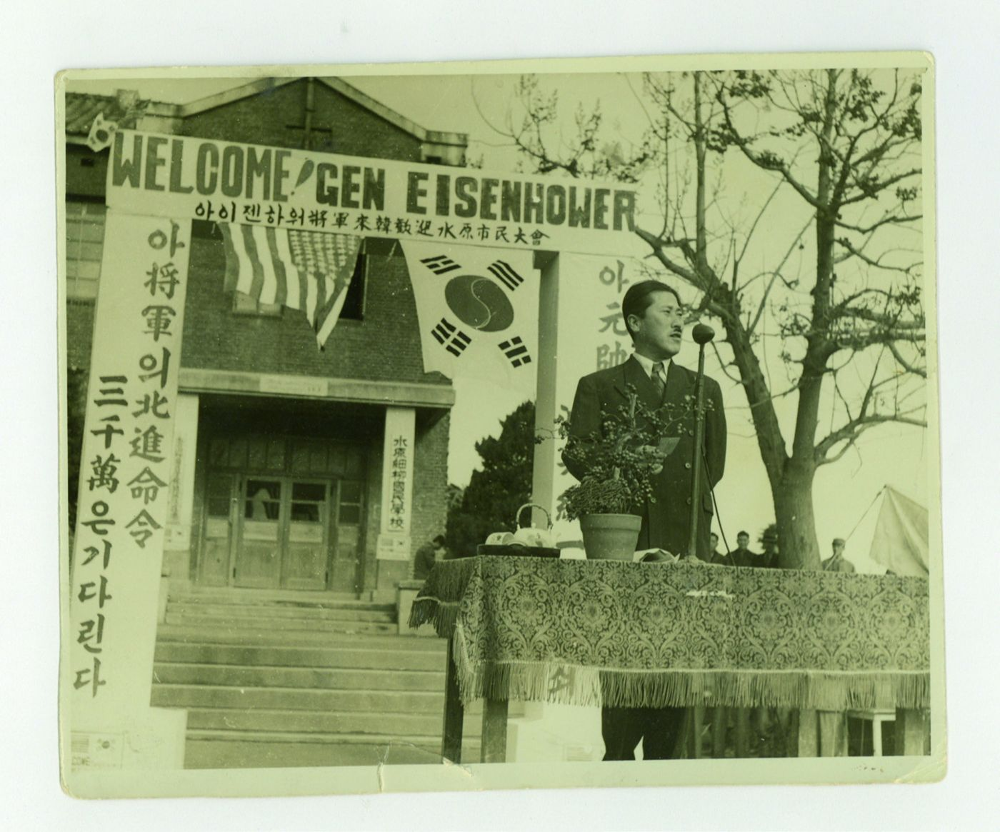
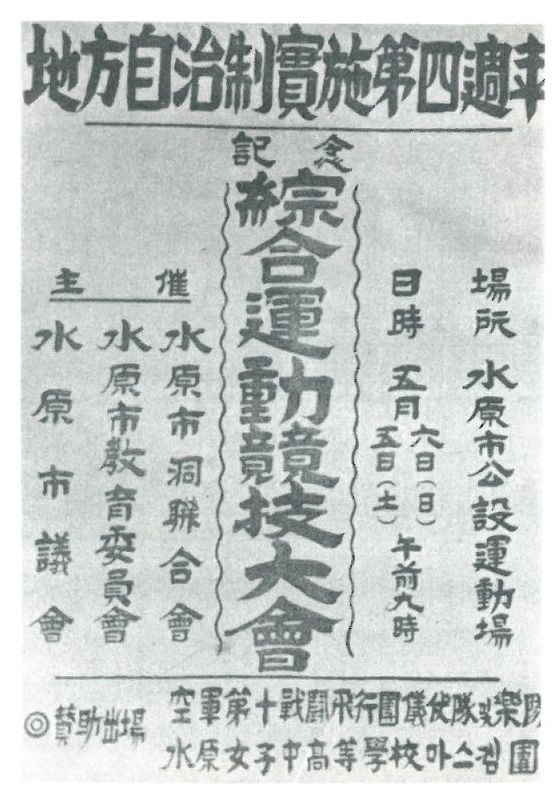

해방 이후, 첫 시의회
수원시의원들의 사회적 배경
1952년 처음으로 구성된 수원시의회. 전쟁의 한가운데에서 치러진 선거로 뽑힌 시의원들은 누구였고, 어떤 경력을 거쳐 지역 정치에 나섰을까.
해방 이후 이승만 정권은 지방자치 실시에 미온적이었다. 주요한 이유는 시기상조론과 치안과 안보 문제였다. 이는 야당과 언론의 집중적 비판 대상이기도 했다.
결국 지방자치는 전쟁 중이던 1952년에 실시되었고, 수원에서도 제1대 시의회가 꾸려졌다. 이 시기 시의원들은 관변 활동과 청년단체 경력을 바탕으로 진출한 경우가 많았다.
함께 보는 자료
초대 시의원들의 좌담회 기념사진과 전기 부의장 차인순의 연설 장면, 그리고 지방자치제 실시 4주년을 기념한 운동경기대회 포스터는 1950년대 지방의회가 지역 사회에 자리 잡던 모습을 보여 준다.
글황병주 (국사편찬위원회 편사연구관)
유상희 (서울대학교 석사)
출처『수원시의원으로 살다』 Ⅱ장, 120–153쪽